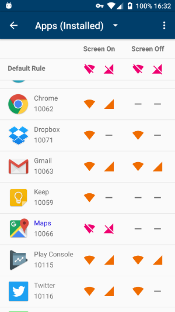
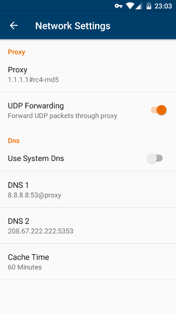
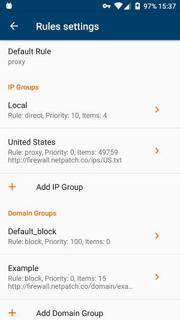
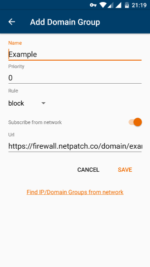
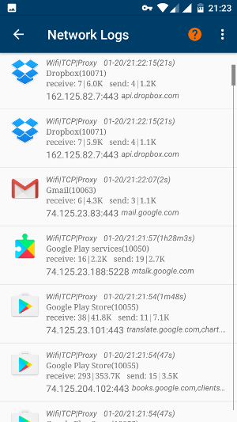
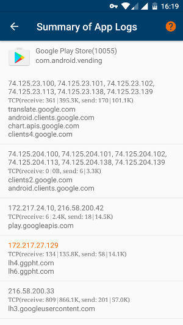

NetPatch Firewall#
Introduction#
NetPatch Firewall is one Full-Featured Advanced android NoRoot firewall. Using it you can Full Control over your device network.
With NetPatch Firewall, you can create network rules based on APP, IP address, and domain name, Or subscribe rules from network.
NetPatch Firewall is designed to save your device's network traffic and battery consumption, improve your network security and protect your privacy.
Features#
- Control Apps network access based screen status(on/off), network type(wifi/mobile) and roaming status.
- No root needed.
- No Ads.
- Support system apps.
- Set secure proxy: Shadowsocks, support TCP/UDP (You need a proxy server).
- Set your custom DNS, and set dns through proxy.
- Free 7-day Trial for Premium
Premium features:
- Create any number of IP groups and domain groups.
- Support Block/Proxy/Direct rules for every group.
- Support TCP/UDP.
- Support network address(eg, 192.168.1.0/24).
- Support root domain name(eg, .domain.com match domain.com/a.domain.com/a.b.domain.com).
- View every network log(include access type, IP, host, activity time, duration time, sending and receiving data size).
- View every App's summary of network logs.
- Block/unblock domain name in App's summary of network logs.
Full-Featured Advanced Firewall#
Control Apps Network Access |
Security with Shadowsocks, |
|  |  |
Create any number of IP groups and domain groups, Fully customize your network |
|
|  |  |
View all network logs, block the access to any domains you don't want at any time |
|
|  |  |
How does NetPatch firewall work?#

Related links#
-
Shadowsocks proxy:
https://shadowsocks.org/ -
Groups for Netpatch Firewall
https://github.com/netpatch/groups_for_netpatch_firewall
Ad/Malware/Tracking group in this project is included in the APK version below.
Download(v0.10)#
- Download on Google Play

- Dowload APK(Size: 1.62M)
SHA256: c593512dec86f86a883f08d20ab608fae7ddf7c4ac46be14f9dddac2e2f765a4
https://file.netpatch.co/NetPatch_Firewall-v0.10-netpatch-release.apk